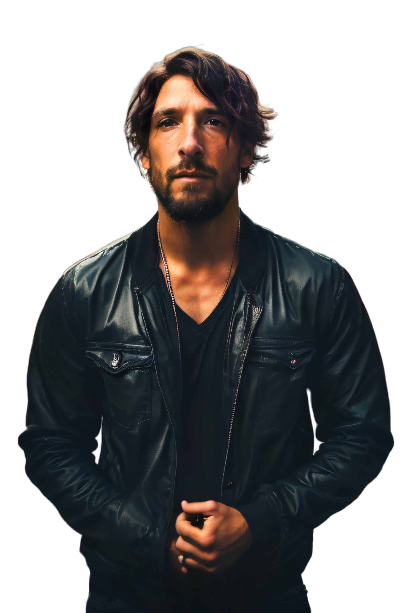

Artista - Programador - Produtor - Cantor - Compositor

Nascido em Brasília DF e criado na Inglaterra, Rafael Z é um artista multifacetado. Essa seção traz um breve resumo dos meus interesses e conhecimentos.
Minha família por parte de mãe tem uma veia musical e artística muito forte. Minha avó não só tocava e cantava, como desenhava o rosto das visitas com perfeição e rapidez, e ensinou todos os filhos a tocar violão e cantar, inclusive minha mãe. Meu tio avô, Maestro Zeli, tocava muitos instrumentos, inclusive baixo, bateria, guitarra, banjo, bandolim, flauta transversal entre outros.
Minha família por parte de pai veio para Brasília quando estava sendo construída, tendo meu avô Walmor Zeredo, engenheiro calculista, calculado todos os ministérios, as três pontes do Lago Sul, grande parte dos viadutos entre outras obras em outros estados.
(Em breve vídeos aqui com explicações rápidas e links pra quem tiver interesse de conhecer, trocar conhecimentos ou simplesmente interagir)